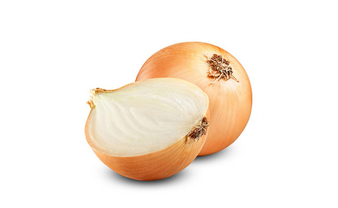

Curry rojo x 50 g

Cebolla x 1 und.Coco x 400 gPimiento x 2 unds.Calabacín x 1 und.Cebollín x 1 und.Pollo x 400 gAzúcar x 30 gAceite x 30 mlChile rojo x 3 unds.Ajo x 1 und.Lima Kaffir x 30 ml
Proceso de preparación
Cortar la cebolla, el pimiento y el calabacín en trozos medianos y dejar en una fuente aparte. Cortar el pollo en trozos pequeños y dejar aparte.
Picar finamente el ajo y la parte blanca del cebollín. Calentar 30 ml de aceite de oliva en un sartén grande o wok y sofreír el ajo y la parte blanca del cebollín durante un par de minutos a fuego medio-bajo.
Añadir la pasta de curry y 400 g de leche de coco, revolver bien durante un par de minutos para que se disuelva la pasta y agregamos los trozos de pollo. Si la pasta no se logra disolver bien, se puede agregar un chorrito de agua caliente.
Cocinar bien el pollo a fuego medio, dándole vueltas de vez en cuando. Cuando el pollo ya esté cocido agregamos 30 g de azúcar moreno y 30 ml de salsa de pescado, revolvemos todo muy bien.
Agregar los vegetales (cebolla, pimiento rojo y calabacín) a la sartén, los salteamos durante un par de minutos y agregamos la leche de coco. Revolvemos todo y lo dejamos a fuego medio-bajo durante 5 minutos o hasta que la preparación hierva.
Apagar el fuego, servir en plato hondo o pequeños bowls y decoramos con un toque verde (parte verde del cebollín y hojas de lima kaffir) y un pequeño ají. La comida se puede acompañar con arroz blanco.
Para hacer el arroz blanco (según las instrucciones del paquete) hay que agregar 1 cucharadita de pimienta y 1 cucharada de sal (a gusto).